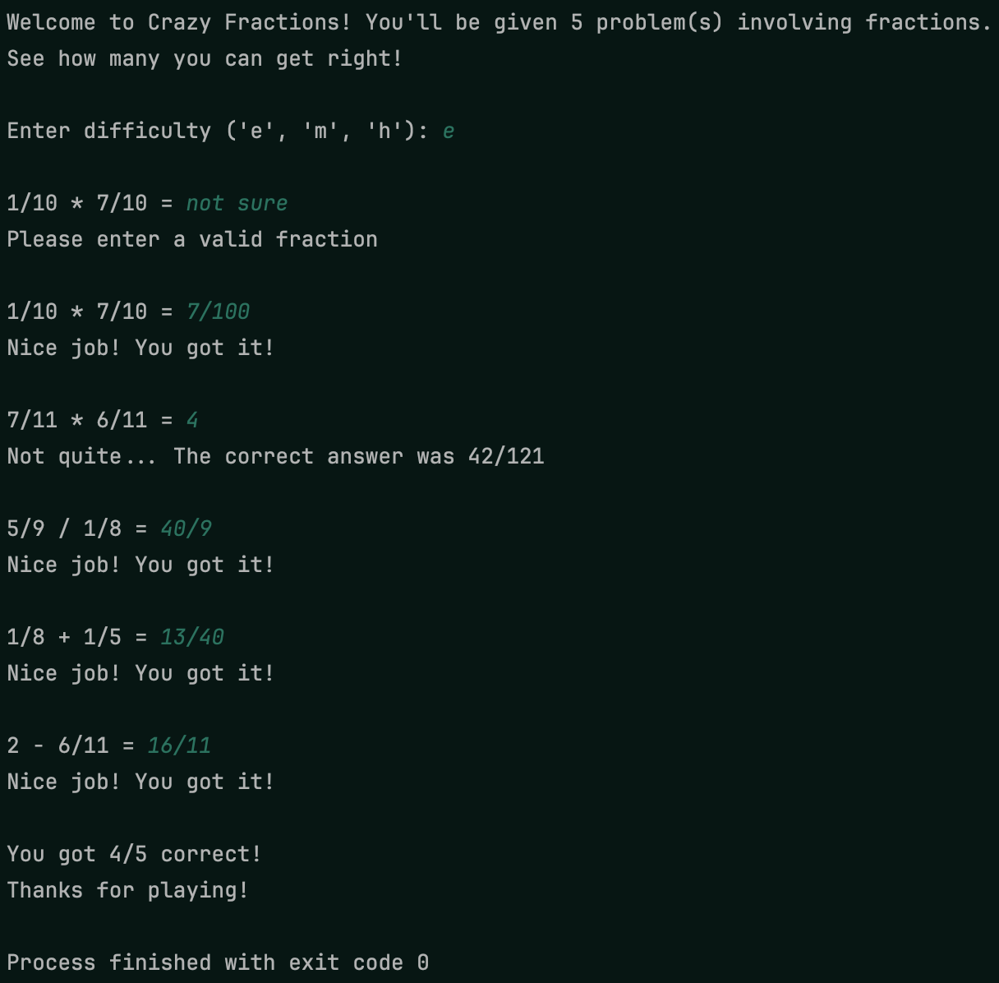
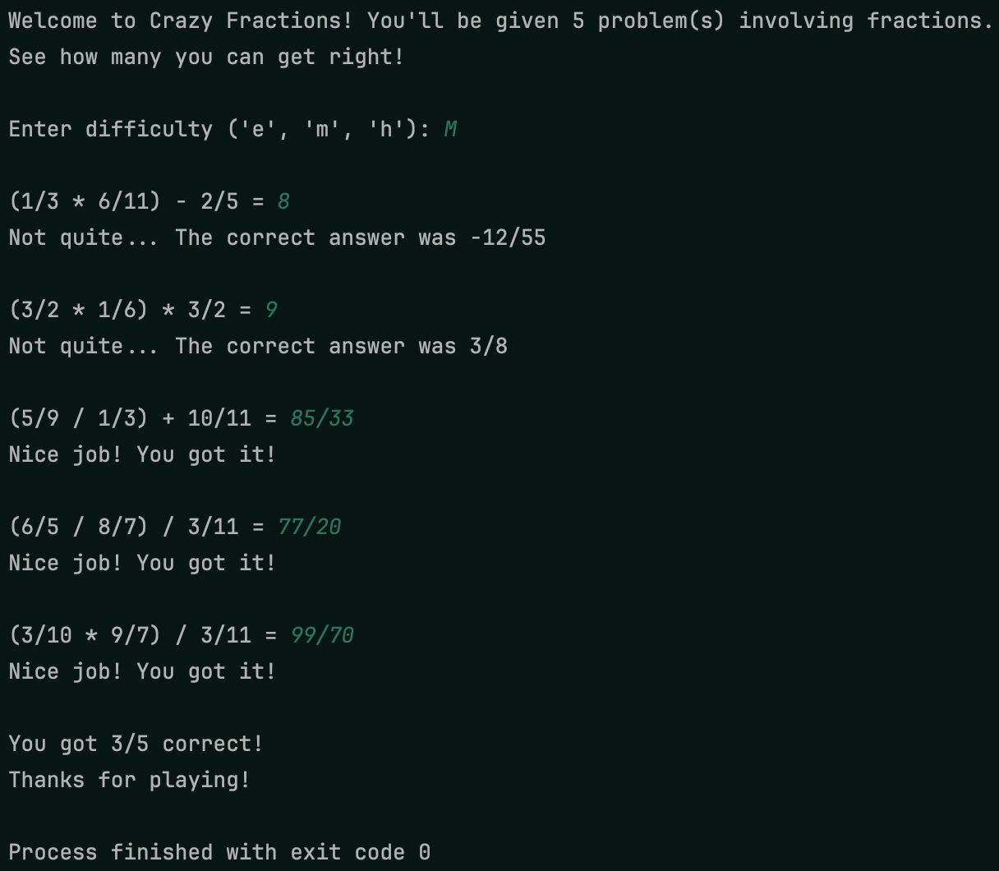
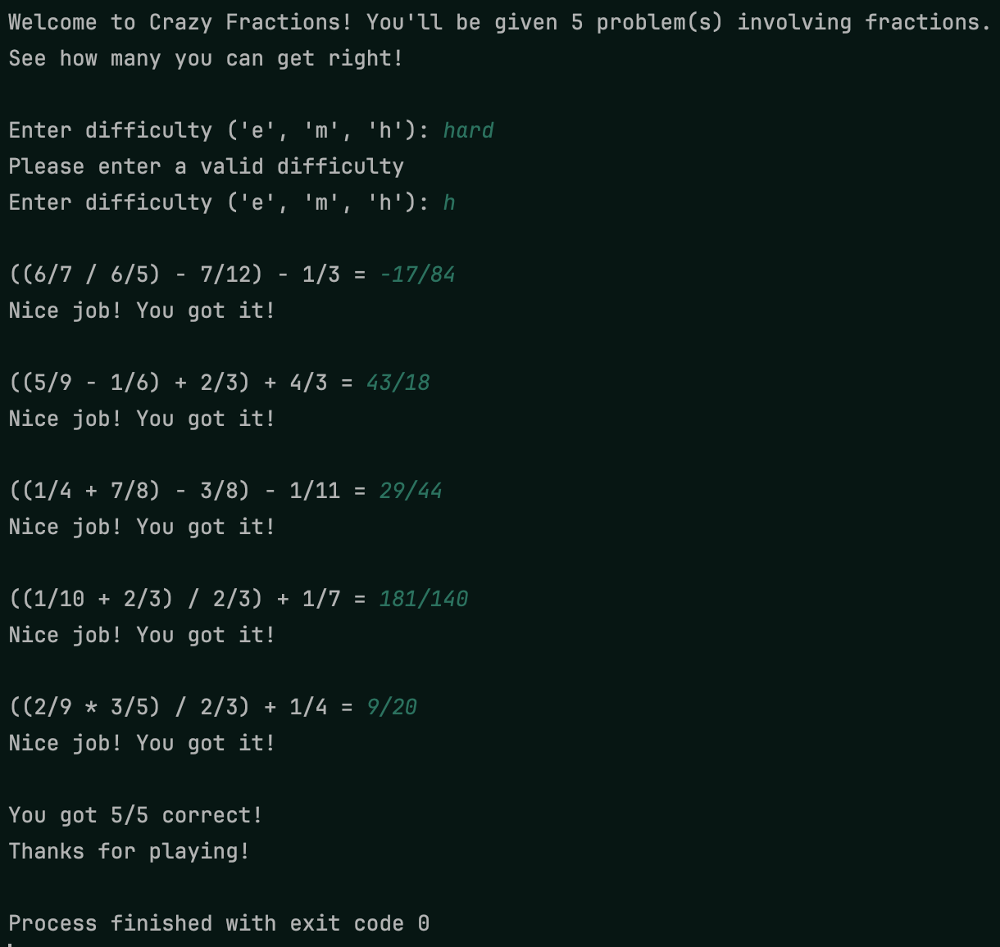

In this project, you’ll program a simple game which asks a player for answers to simple arithmetic problems involving fractions. This game supports three difficulty modes which you can see in the example images below. Make sure to take careful note of how the inputs are handled; your inputs need to be robust so they won’t cause the program to crash. Additionally, whenever you find yourself writing code for a task you’ll need to perform over and over again, write a function for it, and make sure to properly annotate it!
 Easy-mode example
 Medium-mode example
 Hard-mode example